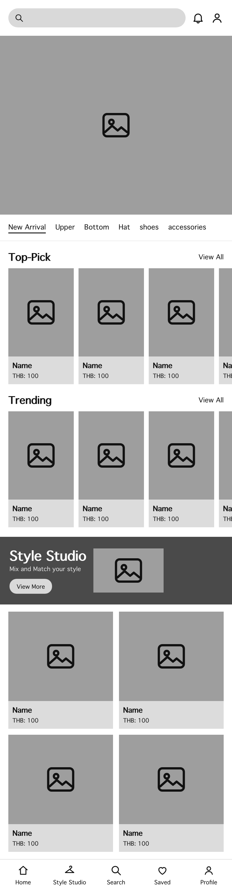
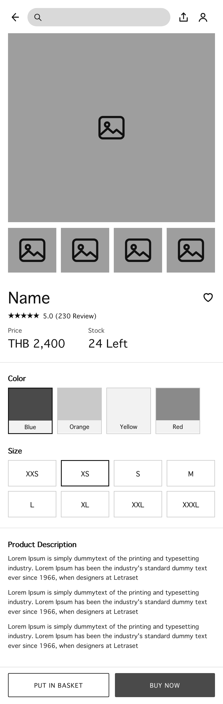
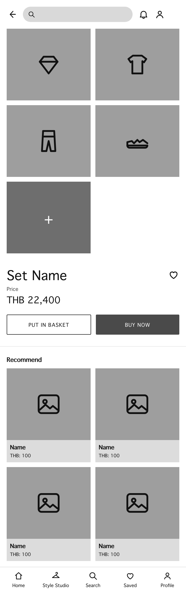
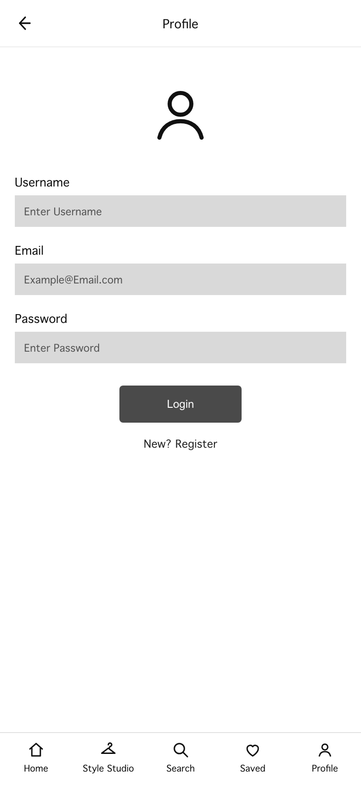
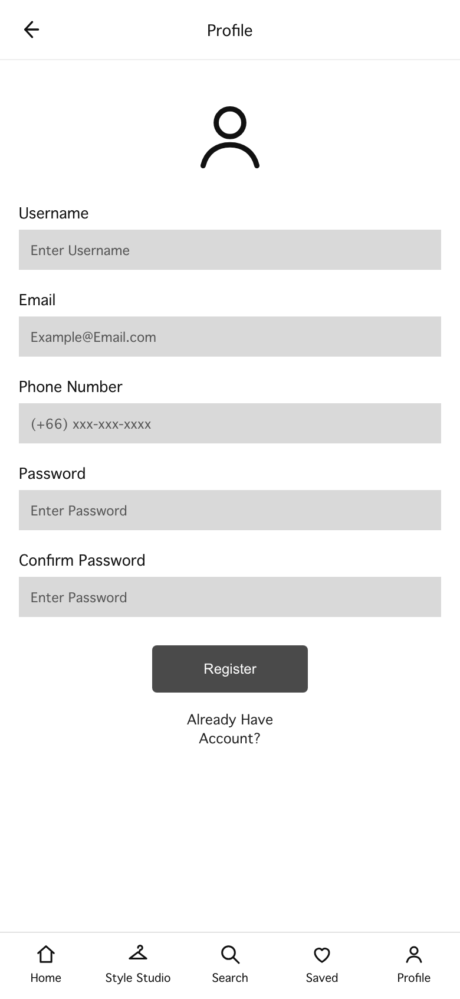
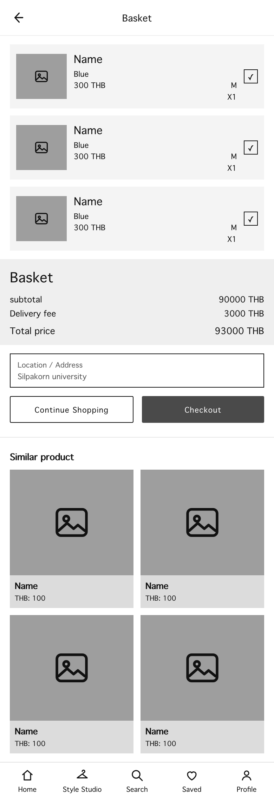
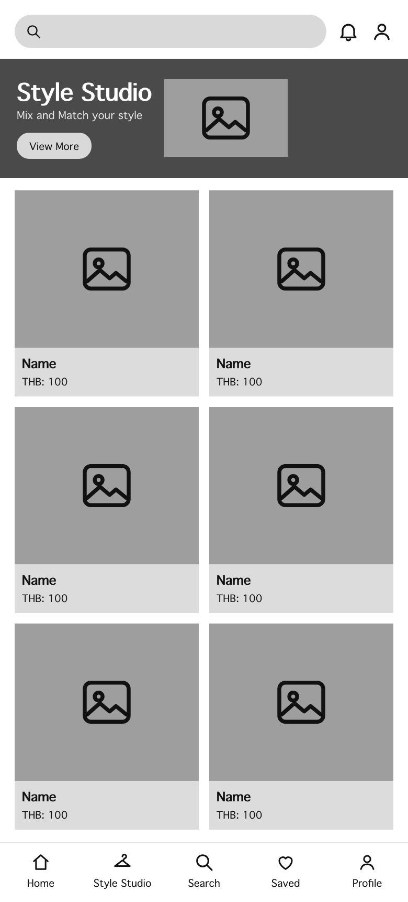
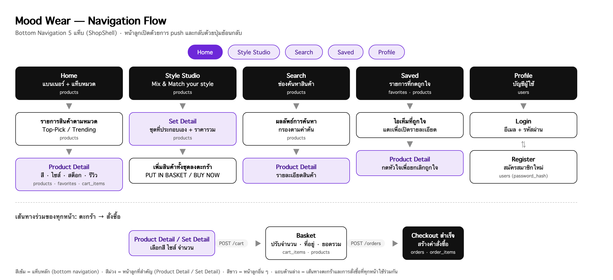
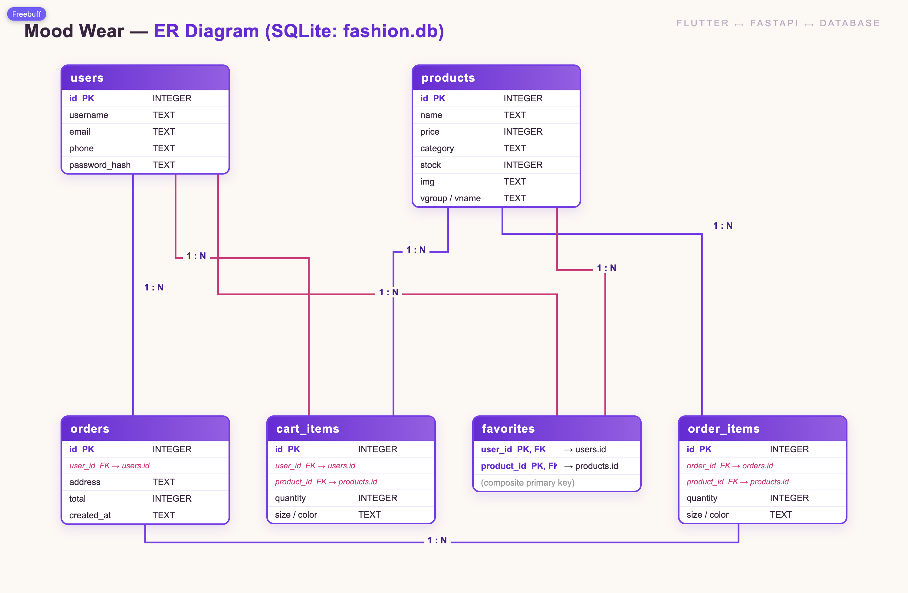

| รายการ | รายละเอียด |
|---|---|
| ชื่อแอปพลิเคชัน | Mood Wear — แอปช้อปปิ้งแฟชั่นที่ให้ผู้ใช้ “แมทช์ชุดตามอารมณ์” และประกอบชุดเองได้ |
| แพลตฟอร์ม | Flutter (Dart) — รันได้ทั้ง Android, Web (Chrome) และ macOS จากโค้ดชุดเดียวกัน |
| ผู้จัดทำ 1 | นางสาว ลภัสรดา หาญกุล — รหัสนักศึกษา 681310676 |
| ผู้จัดทำ 2 | นายวรเศรษฐ์ บุญสวัสดิ์ — รหัสนักศึกษา 681310306 |
| อาจารย์ผู้สอน | รายวิชา 802202 Flutter Development |
| ซอร์สโค้ด | โปรเจกต์ Flutter (lib/) + Backend API (backend/) อยู่ใน Repository เดียวกัน |
ผู้ใช้กลุ่มวัยรุ่น–นักศึกษาเลือกเสื้อผ้าตาม “อารมณ์” และโอกาสในแต่ละวัน (วันเรียน วันเที่ยว วันทำงานกลุ่ม) แต่การแต่งชุดหนึ่งชุด ต้องเปิดหลายแอปพร้อมกันเพื่อเทียบเสื้อ กางเกง รองเท้า และเครื่องประดับ อีกทั้งแอปช้อปปิ้งทั่วไป ไม่มีฟีเจอร์ “ประกอบชุด” ให้เห็นราคารวมก่อนตัดสินใจ และไม่มีการบันทึกไอเท็มที่ถูกใจไว้จัดชุดซ้ำ ร้านค้าขนาดเล็กที่ขายผ่านมือถือก็มักไม่มีเครื่องมือหลังบ้านในการจัดการสินค้าและคำสั่งซื้อ
Mood Wear จึงรวมทุกอย่างไว้ในแอปเดียว: เลือกซื้อตามหมวด, ดูรายละเอียดสินค้าพร้อมสีและไซส์, ประกอบชุดเองใน Style Studio (Mix & Match), เก็บไอเท็มที่ถูกใจ, สั่งซื้อผ่านตะกร้า และมี Back Office สำหรับผู้ดูแลจัดการข้อมูลสินค้า/คำสั่งซื้อผ่าน API ชุดเดียวกัน
| # | ฟีเจอร์ | รายละเอียด | ข้อมูลที่ใช้ |
|---|---|---|---|
| 1 | เลือกซื้อตามหมวด (Home) | แบนเนอร์แนะนำคอลเลกชัน, แท็บหมวด New Arrival · Upper · Bottom · Hat · Shoes · Accessories, ส่วน Top-Pick และ Trending | products |
| 2 | รายละเอียดสินค้า (Product Detail) | รูปหลายมุม, เลือกสีและไซส์, แสดงราคาและสต็อกคงเหลือ, กดถูกใจ, ใส่ตะกร้า หรือซื้อทันที | products, favorites, cart_items |
| 3 | Style Studio (Mix & Match) | หยิบสินค้าหลายชิ้นมาวางเป็นชุดของตัวเอง เห็นราคารวมทันที และบันทึก/ซื้อเป็นเซ็ต | products (หมวด Set + สินค้าทั้งหมด) |
| 4 | ตะกร้าและการสั่งซื้อ (Basket) | ปรับจำนวน/ลบสินค้า, คำนวณ subtotal + ค่าจัดส่ง + ยอดรวม, กรอกที่อยู่ และยืนยันคำสั่งซื้อ | cart_items, orders, order_items |
| 5 | บัญชีผู้ใช้ & รายการถูกใจ | สมัครสมาชิก/เข้าสู่ระบบ (เก็บรหัสผ่านแบบ SHA-256), หน้า Saved รวมไอเท็มที่กดถูกใจ | users, favorites |
ฟีเจอร์เสริม: ค้นหาสินค้า (Search) และ Back Office CRUD 6 ตาราง สำหรับผู้ดูแลร้าน
| ส่วน | เทคโนโลยี | หน้าที่ |
|---|---|---|
| Frontend | Flutter 3 / Dart, Material Design, http package | UI ทั้ง 7 หน้าจอ, state management ภายใน ShopShell, เรียก REST API |
| Backend | FastAPI + Uvicorn (Python) | ให้บริการ REST API 14 endpoint สำหรับแอป + 5 endpoint สำหรับ Back Office |
| ฐานข้อมูล | SQLite (fashion.db) 6 ตาราง | เก็บสินค้า ผู้ใช้ คำสั่งซื้อ ตะกร้า และรายการถูกใจ |
| เครื่องมือ | Android Studio, VS Code, Chrome (Flutter Web), GitHub | พัฒนา ทดสอบ และส่งงาน |
Wireframe ด้านล่างวาดจากโครงจริงของแอป (โครงเดียวกับที่พัฒนาใน Flutter) ใช้กล่องเทาแทนรูปสินค้า และข้อความตัวอย่าง “Name / THB: 100” เพื่อให้เห็นลำดับความสำคัญของข้อมูล (visual hierarchy) ก่อนใส่ข้อมูลจริง







โครงหลักของแอปเป็น Bottom Navigation 5 แท็บ (Home · Style Studio · Search · Saved · Profile) อยู่ใน ShopShell
ทุกแท็บใช้ Scaffold ร่วมกัน จึงสลับหน้าได้โดยไม่ต้องโหลดข้อมูลใหม่ทั้งหมด จากแท็บหลักผู้ใช้เดินทางไปหน้าลูก (Product Detail, Set Detail, Basket) ด้วยการ push หน้าใหม่และกลับด้วยปุ่มย้อนกลับ
| # | จากหน้า | ไปหน้า | การกระทำ / เงื่อนไข |
|---|---|---|---|
| 1 | Home | Product Detail | แตะการ์ดสินค้า → เรียก GET /products/{id} |
| 2 | Home | หมวดสินค้า | แตะแท็บหมวด → กรองรายการด้วย GET /products?category= |
| 3 | Product Detail | Basket | PUT IN BASKET → POST /cart แล้วเปิดตะกร้า |
| 4 | Style Studio | Set Detail | เลือกไอเท็มอย่างน้อย 1 ชิ้น → คำนวณราคารวม → ใส่ตะกร้า/ซื้อ |
| 5 | Basket | คำสั่งซื้อสำเร็จ | กรอกที่อยู่ → Checkout → POST /orders สร้าง orders + order_items |
| 6 | Profile | Login / Register | POST /login หรือ POST /register (รหัสผ่านถูก hash ด้วย SHA-256) |
| 7 | Saved | Product Detail | แตะไอเท็มที่ถูกใจ → เปิดรายละเอียดสินค้า |


| หน้าจอ | ตารางที่ใช้ | รายละเอียดการอ่าน/เขียน |
|---|---|---|
| Home | products | อ่านรายการสินค้าตามหมวด + จัดกลุ่ม Top-Pick / Trending |
| Product Detail | products, favorites, cart_items | อ่านรายละเอียด/สต็อก, เขียน favorites เมื่อกดหัวใจ, เขียน cart_items เมื่อใส่ตะกร้า |
| Style Studio / Set Detail | products | อ่านสินค้าทั้งหมด (รวมหมวด Set) เพื่อนำมาประกอบชุดและคำนวณราคารวม |
| Search | products | ค้นหาด้วยคำค้น (ชื่อ/แบรนด์) ผ่าน GET /products?search= |
| Saved | favorites + products | อ่านรายการที่ผู้ใช้กดถูกใจ (join กับ products เพื่อแสดงรูป/ราคา) |
| Basket | cart_items, products, orders, order_items | อ่าน/แก้ไข/ลบตะกร้า และเมื่อ Checkout จะสร้าง orders + order_items พร้อมล้างตะกร้า |
| Profile (Login/Register) | users | ตรวจอีเมล–รหัสผ่าน หรือเพิ่มผู้ใช้ใหม่ (เก็บ password_hash) |
| Back Office | ทั้ง 6 ตาราง | CRUD ข้อมูลทุกตารางสำหรับผู้ดูแลระบบ |
| Method | Path | หน้าที่ | หน้าจอที่เรียก |
|---|---|---|---|
| GET | /products | ดึงรายการสินค้า รองรับ ?category= และ ?search= | Home, Search, Style Studio |
| GET | /products/{pid} | ดึงรายละเอียดสินค้าตามรหัส (รวม variant สี/ไซส์) | Product Detail |
| POST | /register | สมัครสมาชิกใหม่ (hash รหัสผ่าน SHA-256) | Profile – Register |
| POST | /login | ตรวจสอบอีเมล/รหัสผ่าน คืนข้อมูลผู้ใช้ | Profile – Login |
| GET | /cart?user_id= | ดึงรายการในตะกร้าของผู้ใช้ | Basket |
| POST | /cart | เพิ่มสินค้าลงตะกร้า (กันซ้ำด้วย UNIQUE user/product/size/color) | Product Detail, Set Detail |
| PUT | /cart/{cid} | แก้ไขจำนวน/ตัวเลือกของรายการในตะกร้า | Basket |
| DELETE | /cart/{cid} | ลบสินค้าออกจากตะกร้า 1 รายการ | Basket |
| DELETE | /cart | ล้างตะกร้าทั้งหมด (หลัง Checkout) | Basket |
| GET | /favorites?user_id= | ดึงรายการสินค้าที่ถูกใจ | Saved |
| POST | /favorites | กดถูกใจสินค้า (เพิ่มแถวใน favorites) | Product Detail, Set Detail |
| DELETE | /favorites/{user_id}/{product_id} | ยกเลิกถูกใจ (composite key) | Saved, Product Detail |
| POST | /orders | สร้างคำสั่งซื้อ + รายการสินค้าในคำสั่งซื้อ | Basket (Checkout) |
| GET | /orders?user_id= | ดึงประวัติคำสั่งซื้อของผู้ใช้ | Profile / ประวัติสั่งซื้อ |
| GET | /admin, /admin/stats | หน้า Back Office และสถิติจำนวนแถวทุกตาราง | Back Office |
| GET/POST/PUT/DELETE | /admin/t/{table}[/{pid}] | CRUD ข้อมูลทุกตาราง (products, users, orders, order_items, cart_items, favorites) | Back Office |
Mood Wear เป็นแอป Flutter ที่ออกแบบครบวงจรตั้งแต่แนวคิด ปัญหา กลุ่มเป้าหมาย 5 ฟีเจอร์หลัก ไปจนถึง Wireframe 7 หน้า Navigation Flow และการเชื่อมโยงกับฐานข้อมูล 6 ตารางผ่าน REST API ทำให้เห็นภาพว่า Flutter ไม่ได้เป็นเพียงส่วนหน้าจอ แต่ทำงานร่วมกับระบบหลังบ้านและฐานข้อมูลจริง ผู้ใช้สามารถเลือกซื้อสินค้า ประกอบชุดเอง บันทึกสิ่งที่ถูกใจ และสั่งซื้อได้ในแอปเดียว ขณะที่ผู้ดูแลร้านจัดการข้อมูลผ่าน Back Office ที่ใช้ฐานข้อมูลชุดเดียวกัน
ไฟล์รายงาน: 69flutter_report_681310676_681310306.pdf · วิชา 802202 Flutter Development · ภาคการศึกษา 2569